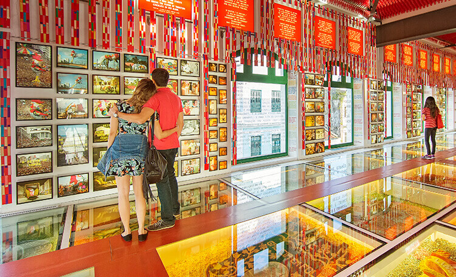
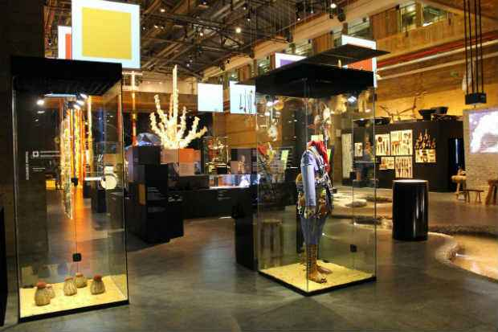
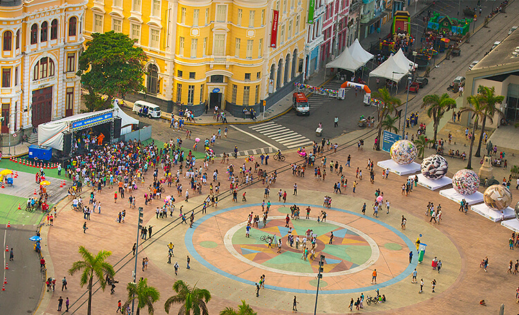
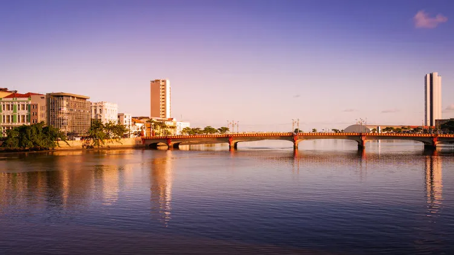
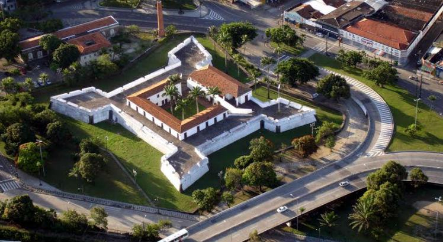

Pontos Turísticos
Recife Antigo possui diversos pontos turísticos que contam a história da cidade e encantam os visitantes. Alguns deles são:
- Paço do Frevo: O Paço do Frevo é um museu localizado no Recife Antigo, dedicado ao frevo, ritmo musical típico do Carnaval pernambucano. O museu conta com um acervo que abrange desde a história do frevo até sua influência na cultura popular, passando por diversos aspectos do gênero, como a dança, a música e os instrumentos utilizados. Além disso, o Paço do Frevo promove atividades culturais e educativas, como oficinas, palestras e apresentações, tornando-se um importante espaço para a preservação e divulgação da cultura pernambucana.; 
- Museu Cais do Sertão: O Cais do Sertão é um espaço cultural localizado no Recife Antigo, que tem como objetivo valorizar e preservar a cultura nordestina e, mais especificamente, a cultura sertaneja de Pernambuco. O museu possui um acervo que reúne elementos da história e cultura do sertão, com destaque para a música, a literatura, a religiosidade e a arte popular. O espaço também oferece exposições interativas, oficinas, apresentações artísticas e atividades educativas, que buscam proporcionar uma imersão na riqueza e diversidade cultural do sertão pernambucano. O Cais do Sertão é um importante ponto turístico do Recife Antigo, que encanta visitantes locais e estrangeiros, e que contribui para o fortalecimento da identidade cultural do Nordeste brasileiro. 
- Marco Zero: pO Marco Zero é um importante ponto turístico localizado no centro histórico do Recife, que marca o início da contagem das distâncias em rodovias de Pernambuco. O monumento foi construído em 1938 e possui um relógio solar em seu centro, que indica a hora do dia com precisão. Além disso, o Marco Zero é um espaço de encontro e convivência entre moradores locais e turistas, que se encantam com a beleza arquitetônica da região e a riqueza cultural do Recife Antigo. O Marco Zero é um ícone da cidade do Recife, que representa o seu passado histórico e o seu presente vibrante e acolhedor. 
- Ponte Maurício de Nassau: A Ponte Maurício de Nassau é uma importante ponte estaiada localizada no Recife, que liga a região central da cidade ao bairro de Boa Viagem. Inaugurada em 2006, a ponte possui 52 metros de altura e 1,5 km de extensão, sendo uma das maiores pontes do tipo na América Latina. Além de ser uma importante obra de engenharia, a ponte se destaca pela beleza arquitetônica e pela vista panorâmica que oferece da cidade do Recife. A Ponte Maurício de Nassau é um dos cartões-postais do Recife e um ponto turístico imperdível para quem visita a cidade. 
- Mercado de São José: O Mercado de São José é um dos mais antigos e tradicionais mercados do Recife, localizado no bairro de São José, próximo ao centro histórico da cidade. Inaugurado em 1875, o mercado é um importante centro de comércio popular, onde se encontram desde produtos regionais, como artesanato, frutas, verduras, carnes e peixes, até roupas, calçados e eletrônicos. Além disso, o Mercado de São José é um espaço de encontro e convivência entre moradores locais e turistas, que se encantam com a diversidade cultural e a história do mercado. O Mercado de São José é um ponto turístico muito visitado no Recife, que permite uma imersão na cultura e na vida cotidiana do povo pernambucano.
- Fortes do Brum: O Forte do Brum é uma fortificação militar histórica localizada no bairro de mesmo nome, no Recife. Construído no século XVII, durante o período colonial, o forte foi utilizado para proteger a cidade de invasões estrangeiras e piratas. Atualmente, o Forte do Brum é um importante monumento histórico e cultural, que abriga um museu com exposições sobre a história militar do Brasil e a arquitetura colonial. Além disso, o forte oferece uma vista privilegiada da cidade e do Rio Capibaribe, tornando-se um local muito visitado por turistas e moradores locais. O Forte do Brum é um patrimônio histórico e cultural do Recife, que mantém viva a memória da cidade e de seus antepassados. 